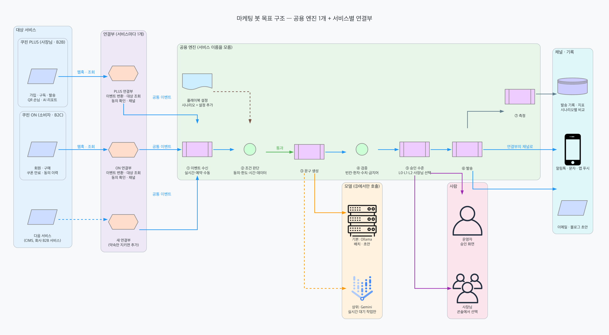
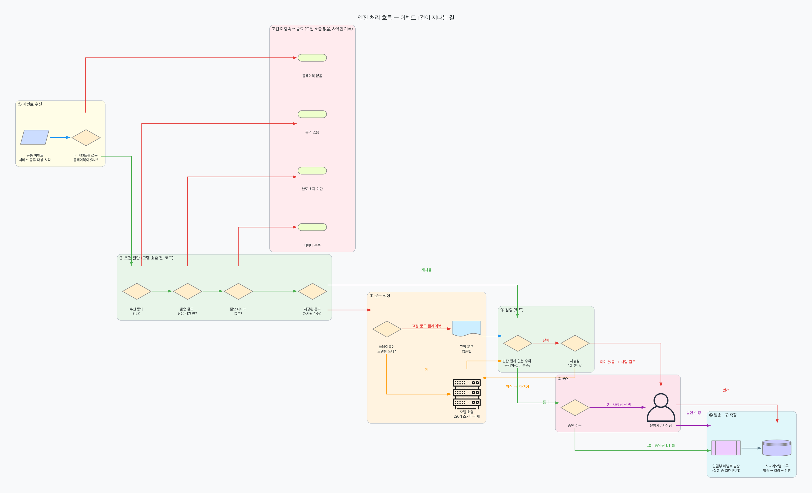
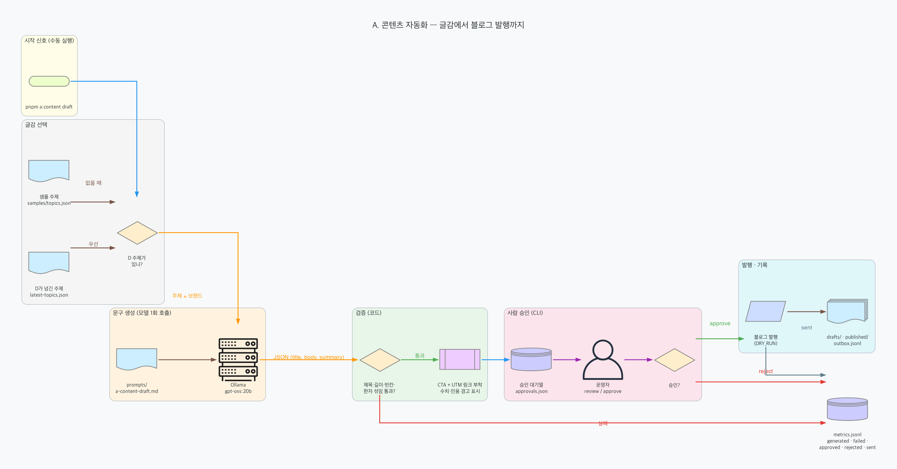
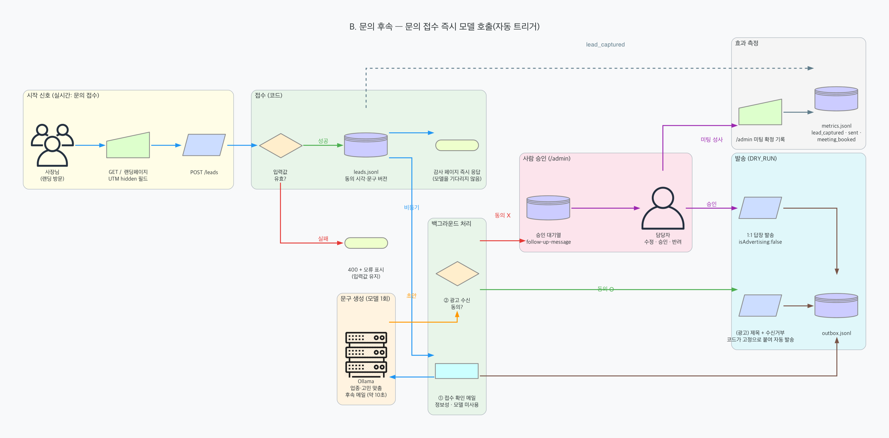
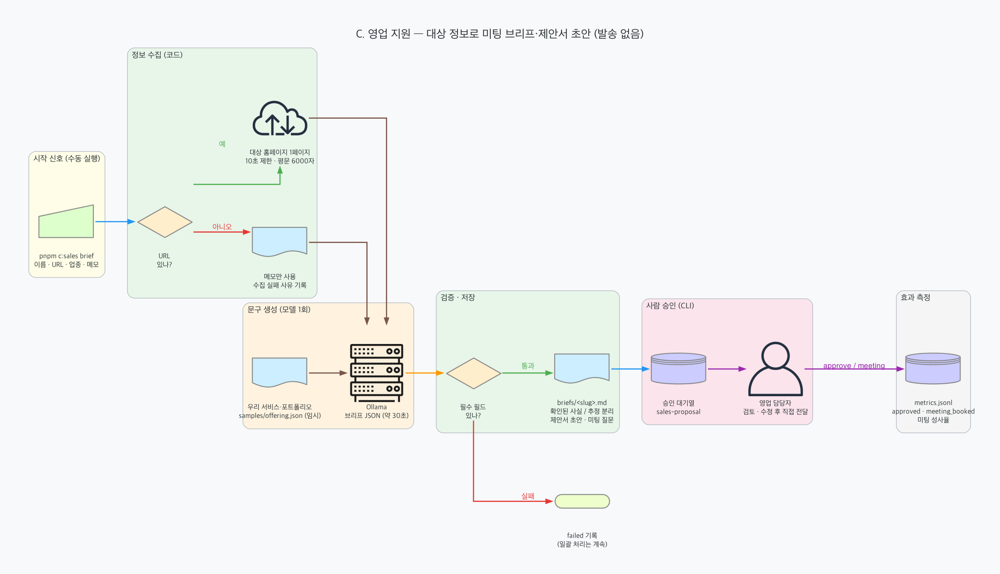

마케팅 봇 flow 다이어그램 모음
- 마케팅 봇 구조 2장: 공용 엔진 + 서비스별 연결부, 모델을 언제 어떤 조건으로 부르는지
- 현재 프로토타입 4장: 지금 만들어 둔 A·B·C·D가 실제로 어떻게 동작하는지
읽는 법
| 선 색 | 의미 | 배경색 | 의미 |
|---|---|---|---|
| ━━ 파랑 | 기본 진행 | 노랑 | 시작 신호 |
| ━━ 초록 | 조건 통과 | 연두 | 코드 처리 (엔진) |
| ━━ 빨강 | 조건 실패 · 차단 | 주황 | 모델 호출 |
| ━━ 주황 | 모델 호출 · 응답 | 분홍 | 사람 승인 |
| ━━ 보라 | 사람 승인 · 수정 | 하늘 | 발송 · 결과 |
| ━━ 갈색 / ━━ 회색 | 데이터 읽기·쓰기 / 지표 기록 | 연보라 | 서비스별 연결부 |
마름모는 조건 판단, 서버 아이콘은 모델, 사람 아이콘은 승인하는 사람입니다. 점선은 아직 연결하지 않았거나 선택적인 흐름입니다.
마케팅 봇 구조
1. 공용 엔진 + 서비스별 연결부
엔진은 서비스 이름을 모르고, 서비스마다 다른 부분(이벤트 형식, 대상 조회, 수신 동의 확인, 발송 채널)은 연결부가 맡습니다. 쿠핀 PLUS·ON 다음 서비스는 연결부만 추가하면 됩니다. 모델은 ③ 문구 생성에서만 호출됩니다.

2. 엔진 처리 흐름 — 모델은 언제, 어떤 조건으로 호출되나
이벤트 1건이 엔진을 지나는 모든 분기입니다. 플레이북·수신 동의·발송 한도·데이터 조건 중 하나라도 맞지 않으면 모델을 부르지 않고 사유만 남깁니다. 검증에 실패하면 1회 재생성하고, 그래도 실패하면 사람이 검토합니다. 서비스별 시나리오(PLUS 7개·ON 4개)는 2부 설계 문서 3장 표에 있습니다.

현재 프로토타입
3. A. 콘텐츠 자동화
운영자가 실행하면 D의 글감(없으면 샘플)으로 모델을 1회 호출해 블로그 초안을 만들고, 코드 검증을 통과한 글만 승인 대기열에 올립니다. 승인한 글만 발행(현재 DRY_RUN)합니다.

4. B. 문의 후속
유일하게 자동으로 모델을 부르는 프로토타입입니다. 문의가 접수되면 감사 페이지를 바로 보여 주고, 뒤에서 접수 확인 메일(모델 미사용) → 후속 메일 생성(모델 1회) 순서로 처리합니다. 광고 동의가 없으면 사람이 고쳐서 1:1 답장으로 보냅니다.

5. C. 영업 지원
대상 이름·홈페이지·메모로 브리프와 제안서 초안을 만듭니다. 확인된 사실과 추정을 나눠 적고, 아무것도 발송하지 않습니다. 영업 담당자가 검토해 직접 전달합니다.

6. D. 커뮤니티·트렌드 모니터링
수집(collect)에는 모델을 쓰지 않습니다. 분석(analyze)에서 모델을 1회 부르고, 근거 없는 항목·경쟁사 홍보·샘플만 근거인 항목은 코드가 걸러 A·C로 넘깁니다. A·B·C·D 중 실제로 이어진 곳은 D→A(글감) 하나입니다.

프로토타입 다이어그램은 marketing-bot 저장소 코드와 README 기준입니다. 구조 다이어그램은 2부 「마케팅 봇 구축 설계」의 제안입니다.